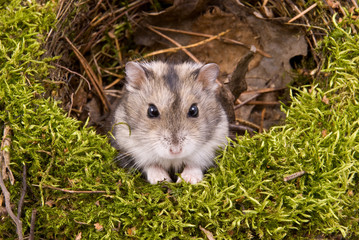
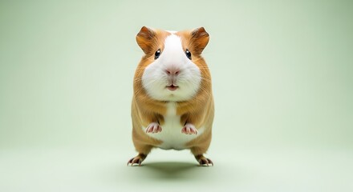
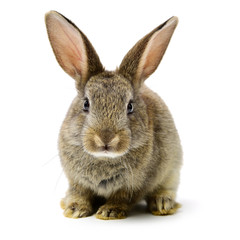
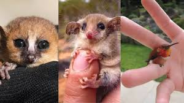
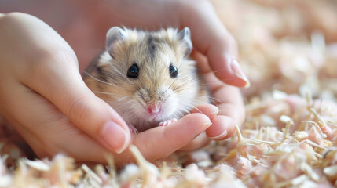
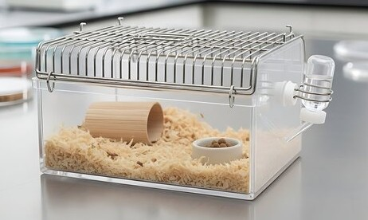
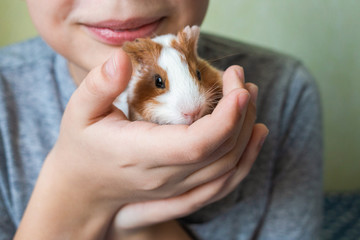
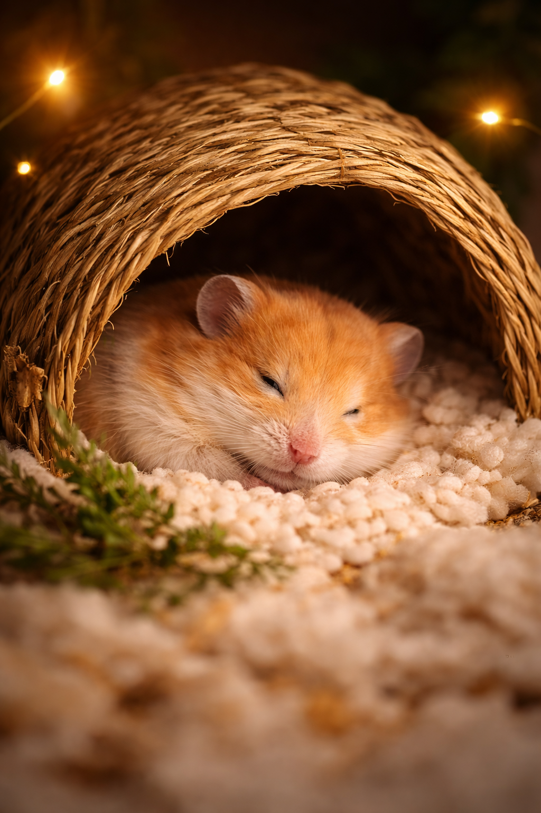

100% Clean & Safe Spaces
Habitats are refreshed with fresh bedding, tidy food zones, and clean water access for stay.
Home Page 2 leans into trust before booking. These promises highlight the everyday standards that shape each stay from drop-off to bedtime.
Habitats are refreshed with fresh bedding, tidy food zones, and clean water access for stay.
Interactions stay soft and unhurried so easily startled pets can settle without extra pressure.
Eating habits, activity, hydration, and overall comfort are quietly monitored through day.
Photo updates and short check-ins help you stay informed without needing to chase for details.
Instead of a rushed boarding routine, the day is broken into calm moments that help tiny pets feel secure while owners know exactly how care is being handled.
The day begins with food checks, clean water refresh, and a quiet look at overnight comfort.
Habitats are tidied, bedding is checked, and each pet is observed for comfort, movement, and calm energy.
Noise stays low while pets settle into a gentle evening rhythm with low-stress supervision.
Quiet rooms, temperature-aware placement, and secure little hideouts support a peaceful rest window.
The cards below are designed as a horizontal scroll so Home Page 2 feels more modern and image-led while still staying easy to browse on mobile.

Quiet handling, secure hideouts, and a routine that respects their sensitive nature and comfort needs.

Extra attention to feeding rhythm, space comfort, and gentle check-ins through the day for a happy.

Clean resting areas, calm observation, and care notes followed with patience and consistency.

Routine-led support for little companions that need clear handling notes and careful daily monitoring.
This section uses a slider plus a sidebar so the page feels visually rich without leaving large empty blocks. It shows setup details while keeping the content practical and easy to scan.
This section focuses entirely on the owner's experience.




Share your dates, pet details, and comfort notes. We will reply with the best stay option for your hamster, guinea pig, rabbit, or other tiny companion.
.jpg)
Instead of star ratings, this version uses warm mini-stories so visitors can imagine the emotional side of leaving.
"I was nervous leaving my hamster for the first time, but the updates made such a difference. The setup looked clean, the routine felt thoughtful, and I could tell he was being handled gently."
"What reassured me most was the calm communication. I did not feel like I had to keep asking for news. Cozy Critters stayed clear, kind, and organised through the whole stay."
"The environment looked peaceful and well prepared, which mattered a lot because my rabbit gets stressed easily. Everything about the stay felt gentle and carefully planned."
These are the questions owners usually ask first when arranging a stay for a hamster, rabbit, guinea pig, or another small companion.